delta-chat — architecture
Document delta & grounded chat, as-built
Ingest → canonical IR → deterministic delta engine → report/markup →
grounded chat, with a homegrown tracer instrumenting all three and an eval
harness scoring every stage against ground truth. Rendered directly from
docs/architecture.mmd — this diagram and the source stay in sync
by regenerating, not by hand-editing.

docs/architecture.svg — also available as .html (this page), .txt (ASCII), and .mmd (mermaid source)
Reading the gaps honestly
- L2 / L3Relations and embeddings are declared in
CanonicalElement/the architecture but never populated or implemented — shown dotted, not hidden. - DWG
DWGAdapteris a real, documented stub (ODA/LibreDWG→DXF→ezdxf path) — not a working parser. - register.pyReal Umeyama similarity-transform estimation from anchor correspondences, verified exact against synthetic ground truth — but this dataset's own scanned pairs apply identical (not independently-randomized) skew to both revisions, so it can't be empirically demonstrated against them.
- severity.pyDeterministic CRITICAL/HIGH/MEDIUM/LOW rule table, not LLM-judged — no eval ground truth exists for it, so it's spot-checked against known real deltas rather than scored through
eval/metrics.py. - chatEvery LLM call is isolated to
llm.py/chat.py: retrieval, citation parsing, and post-validation are all deterministic — an uncited or hallucinated-id answer is programmatically overridden into a refusal.